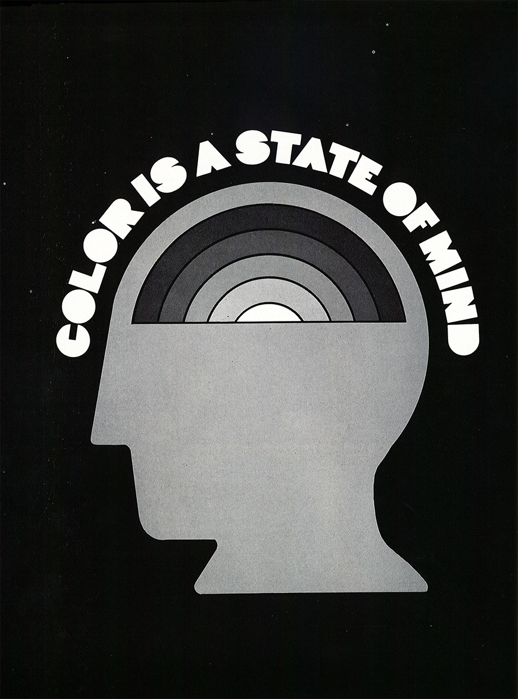

Mobile, Alabama to New York City, New York
Dorthy Hayes, born in Mobile, Alabama, in 1935, decided on graphic design while in high school. She moved to New York in 1958 graduating in graphic design from Cooper Union in 1967. She determined to be ultra-professional and win respect as both a woman and a designer. In 1971 she told a journalist, "You can't get around being a woman. They're going to see it the moment you walk in the door, and they're going to have to go through their man thing with you, the idea that you're theirs, that you'll do whatever they say, like an office wife. It's beautiful, though: if you present yourself as a professional, they really respect you for it. They know you've paid you've paid your dues just like they had to."
When she first arrived in New York City, she couldn't find any black whom she could relate to professionally. The ones she tried to talk to wouldn't talk to her, or they would just brush her off. This experience would soon prompt her to be a role model for future blacks and create experiences to spotlight their work and achievements. She went on record to say:
“When I came to New York ten years ago I couldn’t find anybody blacks in the commercial art field. Finally, after I found a job on my own, I did start to encounter black people. But in the course of trying to develop my talent I discovered that if I went to them for some direction, they just wouldn’t give it. Nobody wanted to take the time to show or tell me anything. I vowed then that if I made it, I would never turn my back on any black person who came to me for advice and information and who really wanted to learn.”
Hayes organized Black Artists in Graphic Communication in 1970 and exhibition that profiled forty-nine young black graphic designers - men and women, including Dorothy Akubuiro, Josephine Jones, and Diane Dillion. Haye's ran Dorothy's Door, a commercial art and design company services major corporate clients such as CBS Radio and AT&T.
***
Unfortunately, the trail of Dorothy's history ran dry after Dorothy's Door. I'll continue to search newspapers and magazine articles for more information, but until then this is the only information I have to share.
Resources
Women Designers in the USA, 1900-2000: Diversity and Difference
By Pat Kirkham
Print Magazine
Encyclopedia Online